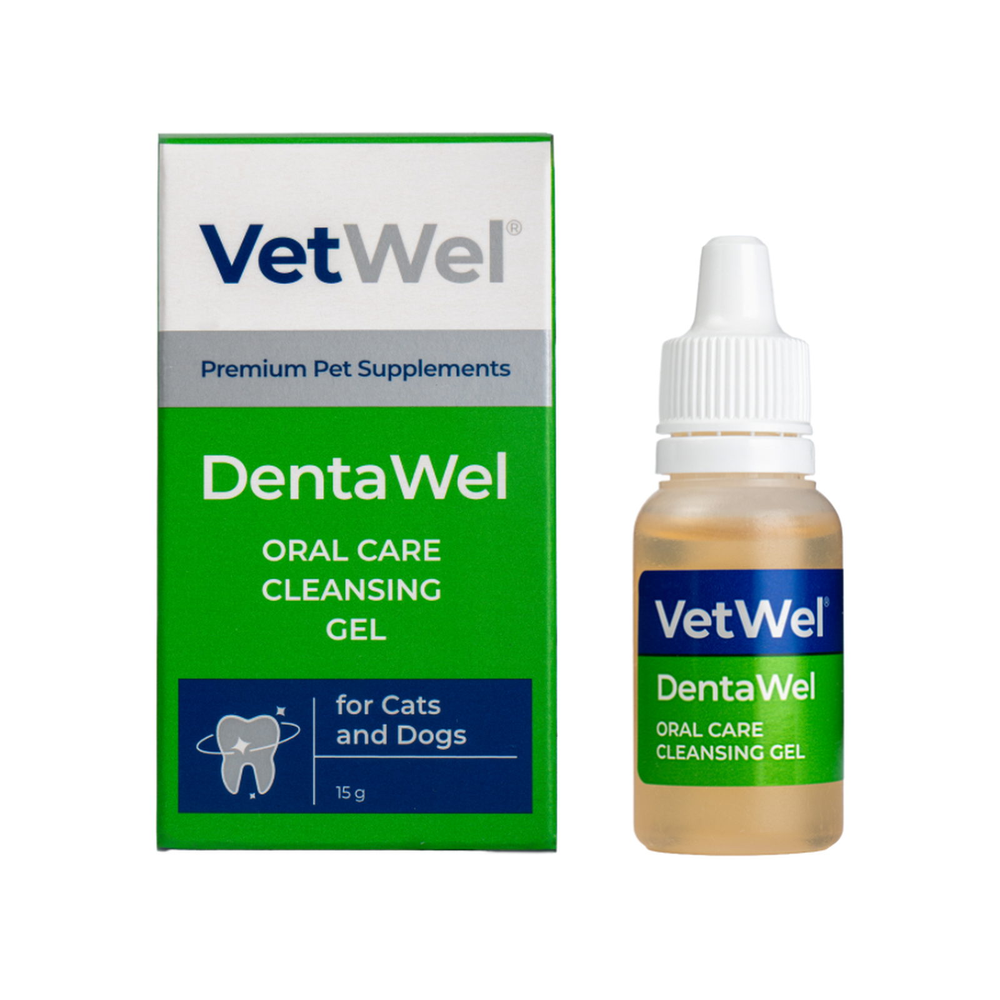

Daily Oral Hygiene
Supports routine oral hygiene and local care of the gums and oral mucosa.
VETWEL® PRODUCT INFORMATION
TOPICAL ORAL CAREDentaWel® is a topical oral-care formula developed to support daily oral hygiene and routine care of the gums and oral mucosa in cats and dogs.

Supports routine oral hygiene and local care of the gums and oral mucosa.
Regular topical use complements a daily-care program aimed at controlling plaque and soft deposits on oral surfaces.
Botanical and functional ingredients are combined to support routine care of gingival tissues.
Provides topical support for sensitive oral mucosa and normal tissue integrity.
Supporting oral cleanliness and local care may help as part of a broader approach to managing unpleasant breath.
When considered appropriate by a veterinarian, DentaWel® may be used as part of home oral care following professional dental cleaning.
DentaWel® combines low-concentration chlorhexidine digluconate, propolis, a broad botanical-extract blend, and topical carrier ingredients rather than relying on a single oral-care component.
0.04% chlorhexidine digluconate is included as a functional component of the oral-surface hygiene system.
Echinacea, calendula, chamomile, sage, thyme, yarrow, and other extracts provide multi-botanical support for gum and oral-mucosa care.
0.3% propolis extract complements the formula's naturally derived oral-care approach.
Hydroxyethyl cellulose and PEG-40 hydrogenated castor oil support local application and formulation performance.
Persistent bad breath, bleeding, pain, tooth loss, heavy calculus, difficulty eating, oral masses, or ulcerative lesions require veterinary dental evaluation. DentaWel® does not replace professional dental cleaning or periodontal treatment.
Apply locally to the area requiring oral care.
May be applied 2–3 times daily.
May be dripped directly or gently applied to the gums and oral mucosa with a clean finger. Brushing is not required.
An initial response assessment may be made after approximately 7–10 days.
When recommended by a veterinarian, it may be used for approximately 14 days as part of post-cleaning home care.
DentaWel® is a topical oral-care formula containing a 2% botanical extract blend, 0.3% propolis, and 0.04% chlorhexidine digluconate. It supports daily oral hygiene, plaque/soft-deposit control, and routine gum and oral-mucosa care, and may complement veterinarian-directed home care following professional dental cleaning.